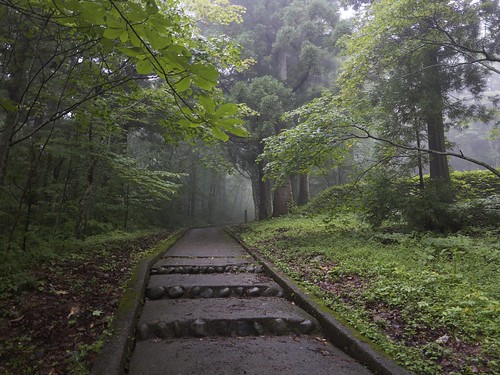
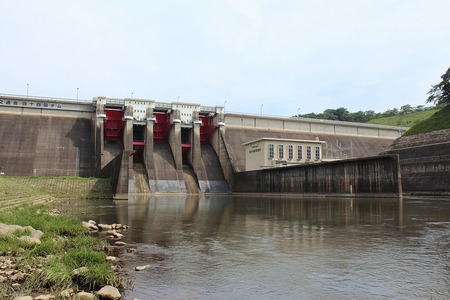

慰霊の森全日空機の機体は粉々になり、乗客は5000メートルもの上空から叩きつけられたので遺体の損傷がはげしかったと言われています。遺体はバラバラになってしまい、つなぎ合わせる作業もしたという悲惨な状態だったといわれている。 |
 |
四十四田ダムある学生が溺れて亡くなったそうです。 その学生は自主映画の製作していて、ダムの中に飛び込むシーンを撮影中だったらしい。 心臓マヒによる事故とされているが後日撮影したフィルムを見てみると溺れている学生に老婆がしがみついていたそうだ。 |
 |
松尾鉱山跡昭和２０年代から40年代まで栄えた鉱山だったが相次ぐ落盤事故やマンモス団地ならではの人の多さから 事件事故で亡くなった者も多かったらしい。他にもバスケットゴールで首つりをした人がいるという噂や、壁に遺書らしき文章が書かれた部屋があるといった噂があります。 |

|